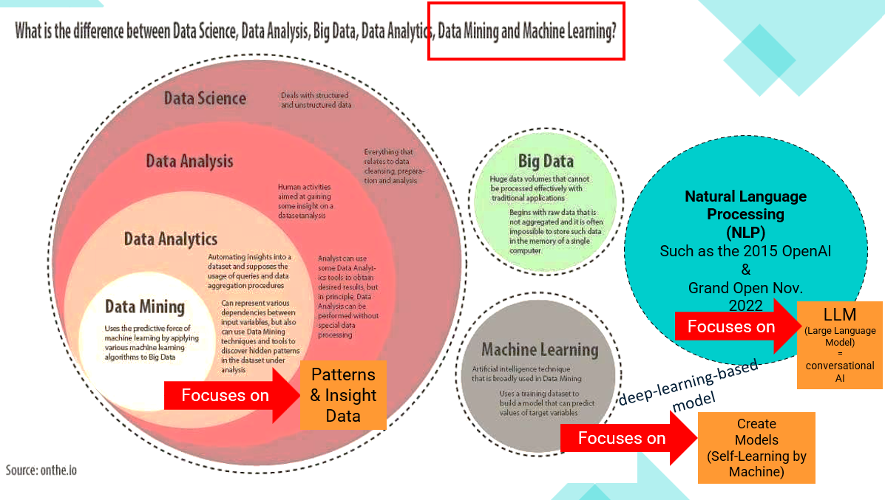

What you will be able to do
- Explain the role of data mining and machine learning in bioinformatics.
- Prepare biomedical data for supervised learning.
- Build and compare classification models.
- Evaluate models beyond accuracy.
- Interpret important features and discuss limitations.
- Document an experiment with Google Colab Notebook .
How Data Mining and Machine Learning Relate
Data mining explores data to discover useful patterns and insights. Machine learning uses algorithms to learn patterns from examples and build models that can make predictions. The two overlap: machine-learning techniques can help with data mining, while data mining can use machine learning to uncover patterns.

Learning journey
Learn the essentials
Review ML concepts, evaluation metrics, overfitting and data leakage. Complete the pre-class questions.
Start Pre-ClassMachine Learning Concepts
Understand supervised and unsupervised learning, features and targets, overfitting, evaluation metrics and interpretability.
Learn ML ConceptsBioinformatics ML Challenge
Explore biomedical data, train models, compare metrics and interpret feature importance.
Open Lab GuideExtend the experiment
Add a model, feature selection or cross-validation and explain what changed.
View AssignmentExplore DNA Promoter Sequences with Clustering
This example uses 106 short DNA sequences from the UCI Molecular Biology (Promoter Gene Sequences) dataset. It encodes each nucleotide by sequence position, applies K-Means with two clusters, and uses PCA to visualize the groups.
Analysis question
Do the sequences form groups based on their nucleotide patterns, without using promoter class labels to create those groups?
How to interpret it
Cluster IDs are arbitrary and are not the same as the known promoter labels. Compare clusters with those labels only after fitting—for example, with adjusted Rand index (ARI) or normalized mutual information (NMI).
Limitations to discuss
This is a small teaching example. Position-wise encoding and K-Means may miss biologically meaningful motifs or sequence-shift patterns, so a 2-D plot or apparent separation is not evidence of a validated biological subtype.
Dataset source: UCI Molecular Biology (Promoter Gene Sequences) .
Open DNA Use Case Notebook in Colab View Notebook File120-minute classroom plan
| Time | Activity | Output |
|---|---|---|
| 0–15 | Challenge + Think–Pair–Share | Problem definition |
| 15–35 | Explore biomedical data | EDA observations |
| 35–60 | Preprocessing + baseline model | Machine Learning Model/td> |
| 60–85 | ML Practice | 3-model comparison |
| 85–105 | Evaluation + interpretation | Metrics + Top-5 features |
| 105–120 | Model Defense | Evidence-based Learning |